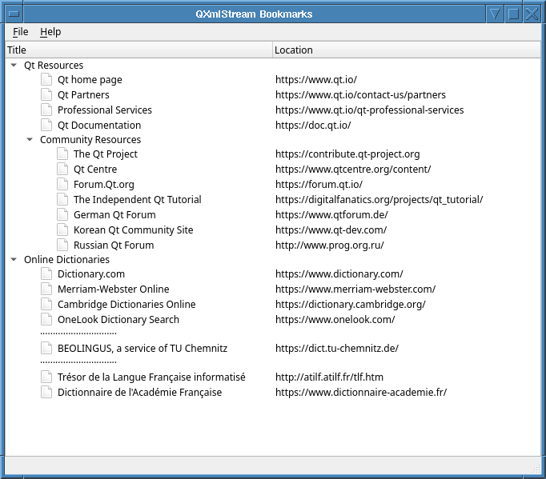
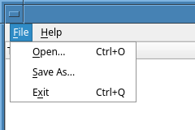
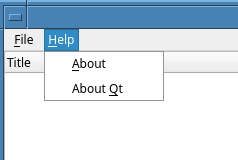

QXmlStream Bookmarks Example
Demonstrates how to read and write XBEL files.
The QXmlStream Bookmarks example provides a viewer for XML Bookmark Exchange Language (XBEL) files. It can read bookmarks using Qt's QXmlStreamReader and write them back out again using QXmlStreamWriter. As this example aims to show how to use these reader and writer types, it provides no means to open a bookmark, add a new one, or merge two bookmark files, and only minimal scope for editing bookmarks. None the less, it could surely be extended with such features, if desired.

XbelWriter Class Definition
The XbelWriter class takes a tree widget describing a hierarchy of folders containing bookmarks. Its writeFile() provides the means to write out this hierarchy, in XBEL format, to a given output device.
Internally, it records the tree widget it was given and packages a private instance of QXmlStreamWriter, which provides it with the means to stream XML. It has an internal writeItem() to write each item in its tree.
class XbelWriter { public: explicit XbelWriter(const QTreeWidget *treeWidget); bool writeFile(QIODevice *device); private: void writeItem(const QTreeWidgetItem *item); QXmlStreamWriter xml; const QTreeWidget *treeWidget; };
XbelWriter Class Implementation
The XbelWriter constructor accepts the treeWidget it will describe. It stores that and enables QXmlStreamWriter's auto-formatting property. This last splits the data into several lines, with indentation to indicate the structure of the tree, which makes the XML output easier to read.
XbelWriter::XbelWriter(const QTreeWidget *treeWidget) : treeWidget(treeWidget) { xml.setAutoFormatting(true); }
The writeFile() function accepts a QIODevice object and directs its QXmlStreamWriter member to write to this device, using setDevice(). This function then writes the document type definition(DTD), the start element, the version, and delegates writing of each of the treeWidget's top-level items to writeItem(). Finally, it closes the document and returns.
bool XbelWriter::writeFile(QIODevice *device) { xml.setDevice(device); xml.writeStartDocument(); xml.writeDTD("<!DOCTYPE xbel>"_L1); xml.writeStartElement("xbel"_L1); xml.writeAttribute("version"_L1, "1.0"_L1); for (int i = 0; i < treeWidget->topLevelItemCount(); ++i) writeItem(treeWidget->topLevelItem(i)); xml.writeEndDocument(); return true; }
The writeItem() function accepts a QTreeWidgetItem object and writes to its XML stream a representation of the object, which depends on its UserRole, which can be one of a "folder", "bookmark", or "separator". Within each folder, it calls itself recursively on each child item, to recursively include a representation of each child within the folder's XML element.
void XbelWriter::writeItem(const QTreeWidgetItem *item) { QString tagName = item->data(0, Qt::UserRole).toString(); if (tagName == "folder"_L1) { bool folded = !item->isExpanded(); xml.writeStartElement(tagName); xml.writeAttribute("folded"_L1, folded ? "yes"_L1 : "no"_L1); xml.writeTextElement("title"_L1, item->text(0)); for (int i = 0; i < item->childCount(); ++i) writeItem(item->child(i)); xml.writeEndElement(); } else if (tagName == "bookmark"_L1) { xml.writeStartElement(tagName); if (!item->text(1).isEmpty()) xml.writeAttribute("href"_L1, item->text(1)); xml.writeTextElement("title"_L1, item->text(0)); xml.writeEndElement(); } else if (tagName == "separator"_L1) { xml.writeEmptyElement(tagName); } }
XbelReader Class Definition
The XbelReader takes a tree widget to populate with items describing a bookmark hierarchy. It supports reading XBEL data from a QIODevice as a source of these items. If parsing of the XBEL data fails, it can report what went wrong.
Internally, it records the QTreeWidget that it will populate and packages an instance of QXmlStreamReader, the companion class to QXmlStreamWriter, which it will use to read XBEL data.
class XbelReader { public: XbelReader(QTreeWidget *treeWidget); bool read(QIODevice *device); QString errorString() const; private: void readXBEL(); void readTitle(QTreeWidgetItem *item); void readSeparator(QTreeWidgetItem *item); void readFolder(QTreeWidgetItem *item); void readBookmark(QTreeWidgetItem *item); QTreeWidgetItem *createChildItem(QTreeWidgetItem *item); QXmlStreamReader xml; QTreeWidget *treeWidget; QIcon folderIcon; QIcon bookmarkIcon; };
XbelReader Class Implementation
Since the XBEL reader is only concerned with reading XML elements, it makes extensive use of the readNextStartElement() convenience function.
The XbelReader constructor requires a QTreeWidget that it will populate. It populates the tree widget's style with suitable icons: a folder icon that changes form to indicate whether each folder as open or closed; and a standard file icon for the individual bookmarks within those folders.
XbelReader::XbelReader(QTreeWidget *treeWidget) : treeWidget(treeWidget) { QStyle *style = treeWidget->style(); folderIcon.addPixmap(style->standardPixmap(QStyle::SP_DirClosedIcon), QIcon::Normal, QIcon::Off); folderIcon.addPixmap(style->standardPixmap(QStyle::SP_DirOpenIcon), QIcon::Normal, QIcon::On); bookmarkIcon.addPixmap(style->standardPixmap(QStyle::SP_FileIcon)); }
The read() function accepts a QIODevice. It directs its QXmlStreamReader member to read content from that device. Note that the XML input must be well-formed to be accepted by QXmlStreamReader. First it reads the outer structure and verifies the content is an XBEL 1.0 file; if it is, read() delegates the actual reading of content to the internal readXBEL().
Otherwise, the raiseError() function is used to record an error message. The reader itself may also do the same if it encounters errors in the input. When read() has finished, it returns true if there were no errors.
bool XbelReader::read(QIODevice *device) { xml.setDevice(device); if (xml.readNextStartElement()) { if (xml.name() == "xbel"_L1 && xml.attributes().value("version"_L1) == "1.0"_L1) readXBEL(); else xml.raiseError(QObject::tr("The file is not an XBEL version 1.0 file.")); } return !xml.error(); }
If read() returns false, its caller can obtain a description of the error, complete with line and column number within the stream, by calling the errorString() function.
QString XbelReader::errorString() const { return QObject::tr("%1\nLine %2, column %3") .arg(xml.errorString()) .arg(xml.lineNumber()) .arg(xml.columnNumber()); }
The readXBEL() function reads the name of a startElement and calls the appropriate function to read it, depending on whether if its tag name is "folder", "bookmark" or "separator". Any other elements encountered are skipped. The function starts with a precondition, verifying that the XML reader has just opened an "xbel" element.
void XbelReader::readXBEL() { Q_ASSERT(xml.isStartElement() && xml.name() == "xbel"_L1); while (xml.readNextStartElement()) { if (xml.name() == "folder"_L1) readFolder(nullptr); else if (xml.name() == "bookmark"_L1) readBookmark(nullptr); else if (xml.name() == "separator"_L1) readSeparator(nullptr); else xml.skipCurrentElement(); } }
The readBookmark() function creates a new editable item representing a single bookmark. It records the XML "href" attribute of the current element as second column text of the item and provisionally sets its first column text to "Unknown title" before scanning the rest of the element for a title element to over-ride that, skipping any unrecognized child elements.
void XbelReader::readTitle(QTreeWidgetItem *item) { Q_ASSERT(xml.isStartElement() && xml.name() == "title"_L1); item->setText(0, xml.readElementText()); }
The readTitle() function reads a bookmark's title and records it as the title (first column text) of the item for which it was called.
void XbelReader::readSeparator(QTreeWidgetItem *item) { Q_ASSERT(xml.isStartElement() && xml.name() == "separator"_L1); constexpr char16_t midDot = u'\xB7'; static const QString dots(30, midDot); QTreeWidgetItem *separator = createChildItem(item); separator->setFlags(item ? item->flags() & ~Qt::ItemIsSelectable : Qt::ItemFlags{}); separator->setText(0, dots); xml.skipCurrentElement(); }
The readSeparator() function creates a separator and sets its flags. The separator item's text is set to 30 centered dots. The rest of the element is then skipped using skipCurrentElement().
void XbelReader::readSeparator(QTreeWidgetItem *item) { Q_ASSERT(xml.isStartElement() && xml.name() == "separator"_L1); constexpr char16_t midDot = u'\xB7'; static const QString dots(30, midDot); QTreeWidgetItem *separator = createChildItem(item); separator->setFlags(item ? item->flags() & ~Qt::ItemIsSelectable : Qt::ItemFlags{}); separator->setText(0, dots); xml.skipCurrentElement(); }
The readFolder() function creates an item and iterates the content of the folder element, adding children to this item to represent the contents of the folder element. The loop over folder content is similar in form to the one in readXBEL(), save that it now accepts a title element to set the title of the folder.
void XbelReader::readFolder(QTreeWidgetItem *item) { Q_ASSERT(xml.isStartElement() && xml.name() == "folder"_L1); QTreeWidgetItem *folder = createChildItem(item); bool folded = xml.attributes().value("folded"_L1) != "no"_L1; folder->setExpanded(!folded); while (xml.readNextStartElement()) { if (xml.name() == "title"_L1) readTitle(folder); else if (xml.name() == "folder"_L1) readFolder(folder); else if (xml.name() == "bookmark"_L1) readBookmark(folder); else if (xml.name() == "separator"_L1) readSeparator(folder); else xml.skipCurrentElement(); } }
The createChildItem() helper function creates a new tree widget item that's either a child of the given item or, if no parent item is given, a direct child of the tree widget. It sets the new item's UserRole to the tag name of the current XML element, matching how XbelWriter::writeFile() uses that UserRole.
QTreeWidgetItem *XbelReader::createChildItem(QTreeWidgetItem *item) { QTreeWidgetItem *childItem = item ? new QTreeWidgetItem(item) : new QTreeWidgetItem(treeWidget); childItem->setData(0, Qt::UserRole, xml.name().toString()); return childItem; }
MainWindow Class Definition
The MainWindow class is a subclass of QMainWindow, with a File menu and a Help menu.
class MainWindow : public QMainWindow { Q_OBJECT public: MainWindow(); public slots: void open(); void saveAs(); void about(); #if QT_CONFIG(clipboard) && QT_CONFIG(contextmenu) void onCustomContextMenuRequested(const QPoint &pos); #endif private: void createMenus(); QTreeWidget *const treeWidget; };
MainWindow Class Implementation
The MainWindow constructor sets up its QTreeWidget object, treeWidget, as its own central widget, with column headings for the title and location of each book-mark. It configures a custom menu that enables the user to perform actions on individual bookmarks within the tree widget.
It invokes createMenus() to set up its own menus and their corresponding actions. It sets its title, announces itself as ready and sets its size to a reasonable proportion of the available screen space.
MainWindow::MainWindow() : treeWidget(new QTreeWidget) { treeWidget->header()->setSectionResizeMode(QHeaderView::Stretch); treeWidget->setHeaderLabels(QStringList{tr("Title"), tr("Location")}); #if QT_CONFIG(clipboard) && QT_CONFIG(contextmenu) treeWidget->setContextMenuPolicy(Qt::CustomContextMenu); connect(treeWidget, &QWidget::customContextMenuRequested, this, &MainWindow::onCustomContextMenuRequested); #endif setCentralWidget(treeWidget); createMenus(); statusBar()->showMessage(tr("Ready")); setWindowTitle(tr("QXmlStream Bookmarks")); const QSize availableSize = screen()->availableGeometry().size(); resize(availableSize.width() / 2, availableSize.height() / 3); }
A custom menu, triggered when the user right-clicks on a bookmark, provides for copying the bookmark as a link or directing a desktop browser to open the URL it references. This menu is implemented (when relevant features are enabled) by onCustomContextMenuRequested().
#if QT_CONFIG(clipboard) && QT_CONFIG(contextmenu) void MainWindow::onCustomContextMenuRequested(const QPoint &pos) { const QTreeWidgetItem *item = treeWidget->itemAt(pos); if (!item) return; const QString url = item->text(1); QMenu contextMenu; QAction *copyAction = contextMenu.addAction(tr("Copy Link to Clipboard")); QAction *openAction = contextMenu.addAction(tr("Open")); QAction *action = contextMenu.exec(treeWidget->viewport()->mapToGlobal(pos)); if (action == copyAction) QGuiApplication::clipboard()->setText(url); else if (action == openAction) QDesktopServices::openUrl(QUrl(url)); } #endif // QT_CONFIG(clipboard) && QT_CONFIG(contextmenu)
The createMenus() function creates the fileMenu and helpMenu and adds QAction objects to them, bound variously to the open(), saveAs() and about() functions, along with QWidget::close() and QApplication::aboutQt(). The connections are as shown below:
void MainWindow::createMenus() { QMenu *fileMenu = menuBar()->addMenu(tr("&File")); QAction *openAct = fileMenu->addAction(tr("&Open..."), this, &MainWindow::open); openAct->setShortcuts(QKeySequence::Open); QAction *saveAsAct = fileMenu->addAction(tr("&Save As..."), this, &MainWindow::saveAs); saveAsAct->setShortcuts(QKeySequence::SaveAs); QAction *exitAct = fileMenu->addAction(tr("E&xit"), this, &QWidget::close); exitAct->setShortcuts(QKeySequence::Quit); menuBar()->addSeparator(); QMenu *helpMenu = menuBar()->addMenu(tr("&Help")); helpMenu->addAction(tr("&About"), this, &MainWindow::about); helpMenu->addAction(tr("About &Qt"), qApp, &QApplication::aboutQt); }
This creates the menu shown in the screenshots below:
|  |  |
The open() function, when triggered, offers the user a file dialog to use to select a bookmarks file. If a file is selected, it is parsed using an XBelReader to populate the treeWidget with bookmarks. If problems arise with opening or parsing the file, a suitable warning message is displayed to the user, including file name and error message. Otherwise, the bookmarks read from the file are displayed and the window's status bar briefly reports that the file has been loaded.
void MainWindow::open() { QFileDialog fileDialog(this, tr("Open Bookmark File"), QDir::currentPath()); fileDialog.setMimeTypeFilters({"application/x-xbel"_L1}); if (fileDialog.exec() != QDialog::Accepted) return; treeWidget->clear(); const QString fileName = fileDialog.selectedFiles().constFirst(); QFile file(fileName); if (!file.open(QFile::ReadOnly | QFile::Text)) { QMessageBox::warning(this, tr("QXmlStream Bookmarks"), tr("Cannot read file %1:\n%2.") .arg(QDir::toNativeSeparators(fileName), file.errorString())); return; } XbelReader reader(treeWidget); if (!reader.read(&file)) { QMessageBox::warning( this, tr("QXmlStream Bookmarks"), tr("Parse error in file %1:\n\n%2") .arg(QDir::toNativeSeparators(fileName), reader.errorString())); } else { statusBar()->showMessage(tr("File loaded"), 2000); } }
The saveAs() function displays a QFileDialog, prompting the user for a fileName, to which to save a copy of the bookmarks data. Similar to the open() function, this function also displays a warning message if the file cannot be written to.
void MainWindow::saveAs() { QFileDialog fileDialog(this, tr("Save Bookmark File"), QDir::currentPath()); fileDialog.setAcceptMode(QFileDialog::AcceptSave); fileDialog.setDefaultSuffix("xbel"_L1); fileDialog.setMimeTypeFilters({"application/x-xbel"_L1}); if (fileDialog.exec() != QDialog::Accepted) return; const QString fileName = fileDialog.selectedFiles().constFirst(); QFile file(fileName); if (!file.open(QFile::WriteOnly | QFile::Text)) { QMessageBox::warning(this, tr("QXmlStream Bookmarks"), tr("Cannot write file %1:\n%2.") .arg(QDir::toNativeSeparators(fileName), file.errorString())); return; } XbelWriter writer(treeWidget); if (writer.writeFile(&file)) statusBar()->showMessage(tr("File saved"), 2000); }
The about() function displays a QMessageBox with a brief description of the example, or general information about Qt and the version of it in use.
void MainWindow::about() { QMessageBox::about(this, tr("About QXmlStream Bookmarks"), tr("The <b>QXmlStream Bookmarks</b> example demonstrates how to use Qt's " "QXmlStream classes to read and write XML documents.")); }
main() Function
The main() function instantiates MainWindow and invokes the show() function to display it, then its open(), as this is most likely what the user shall want to do first.
int main(int argc, char *argv[]) { QApplication app(argc, argv); MainWindow mainWin; mainWin.show(); mainWin.open(); return app.exec(); }
See the XML Bookmark Exchange Language Resource Page for more information about XBEL files.